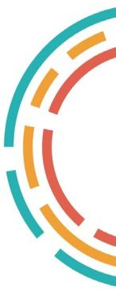

Prioriza qué inversores inspeccionar hoy. Un Isolation Forest marca los inversor-día raros; la app traduce la rareza en una orden de trabajo con su valor en kWh y pesos.
Elige el día que el modelo debe revisar: un día real del periodo de prueba (que el modelo nunca vio al entrenar) o tu propio archivo SCADA.
Aún no has cargado un archivo.
Copia este texto en un archivo .csv, modifícalo y súbelo.
Inyecta una falla sobre el día elegido y mira si el modelo la encuentra y cómo cambia la decisión.
Más largo = más raro respecto a lo aprendido en 219 días de operación. El bigote es ±2 desviaciones entre 5 bosques entrenados con semillas distintas (incertidumbre del modelo). Toca una barra para ver el detalle.
Sin puntaje por datos insuficientes: —
Inversores en alerta, ordenados por energía que se deja de perder si se corrige la falla.
También en alerta, pero no caben en la capacidad de la cuadrilla. Mañana se reevalúan.
Regla de alerta: puntaje IF > o déficit de energía frente a su referencia > . Ambos umbrales se fijaron en el periodo de validación, no en el de prueba.
Simulación día a día con la cuadrilla de la planta: cada inspección cuesta; una falla atendida deja de perder energía desde el día siguiente. Partición cronológica 60/20/20.
| Estrategia | Inspecciones | Útiles | Precisión | Fallas halladas | Días hasta hallarla | MWh recuperados | Valor neto (M COP) |
|---|
AUC-ROC por tipo en el periodo de prueba (1 = separa perfecto, 0,5 = azar). Los disparos no ocurrieron en prueba.
Datos de todo 2025, 12 inversores, 06:00–18:00.